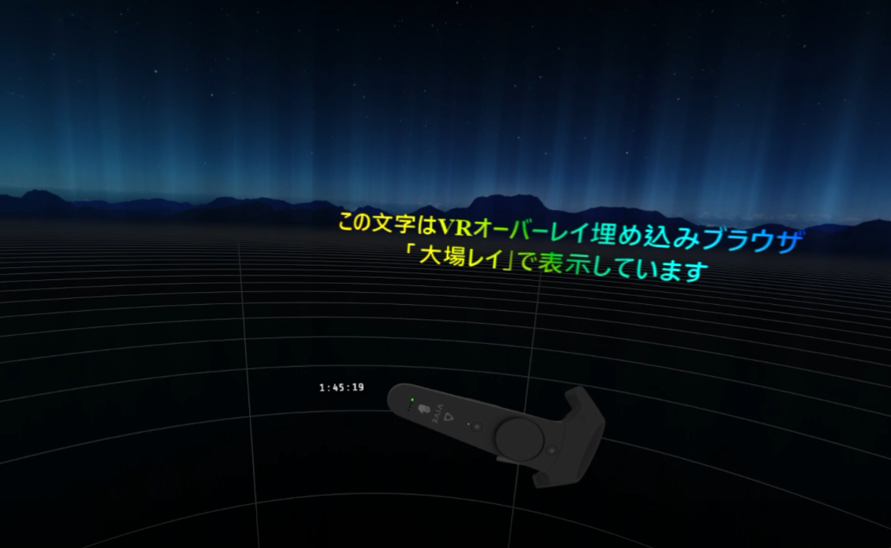

これは何？
内部的にChromium v81ブラウザを実行し、そのレンダリング結果をVR空間上に投影します。

VRオーバーレイという機能を用いるため、現在起動しているVRアプリケーションに関わらず、表示できます。
デモとして次の2つがデフォルトで表示する設定になっています。
内部動作はブラウザなので、ローカルのHTMLファイル、Web上のサイトの他、画像や動画を表示することも可能です。
また、javascriptによるインタラクティブコンテンツの作成のほか、WebSocketを使った通信の待ち受け、CSSアニメーションなども動作します。
VR上のデバイス（トラッカー）に追従させることも可能なため、デモのような腕時計のようなものの他、HUD (Head Up Display)のような表示のほか、
別途トラッカーを用意し、自由に動かせるモニターのように利用することもできます。
時計などの情報表示のほか、LINEやTwitterなどの通知の表示、
VR配信時のコメントビューアー、ゆかりねっとの認識結果を確認するなどの使い方が考えられます。
注意事項
現在オーバーレイ表示したブラウザの操作、フォームの入力やクリック、画面のスクロールなどには対応していません。
VRアプリケーションの操作と競合しない入力方法が確立できていないためです。
まだ開発版ですので、床に小さく "大場レイ#開発版" と表示されます。ご了承ください。
設定方法
デフォルトで起動時に 'Config/displays.json' ファイルを読みにいきます。
全ての設定はこの 'displays.json' ファイルに記載し、VR空間上での位置・角度の他、表示するURL、解像度などを記載します。
解像度の単位は pixel、長さの単位は meter、角度の単位は degreeです。
ファイルフォーマットは下記の通りですが、左記のリンクからジェネレータを使うと便利です。
ファイルフォーマット
Tips
背景を透過させる
対象のHTML内に次のMETAタグを追加します
<meta name="transparent" content="true">
HUDみたいな表示にする
HMD追従させて、サイズをうまく調整すればできます。初代Viveの場合、次の設定でいい感じになります
- position
- { x: 0, y: 0, z: 0.5 }
- resolution
- { x: 1200, y: 1000 }
- device
- HMD
あまりHMDからの距離を近づけすぎる（position.zを小さくする）と左右の視差が吸収できなくなって疲れます。
解像度がぼやける
resolutionを上げればいいですが、HTML内のスタイルでサイズと合わせておくとデスクトップのブラウザの表示と合わせやすいです。
例えば、640x480pxで表示する場合は下記の通りです。
<style>
html {
width: 640px;
height: 480px;
overflow: hidden;
}
</style>
- resolution
- { x: 640, y: 480 }
文字化けする
METAタグで言語情報を設定しましょう
<meta http-equiv="Content-Type" content="text/html; charset=UTF-8">